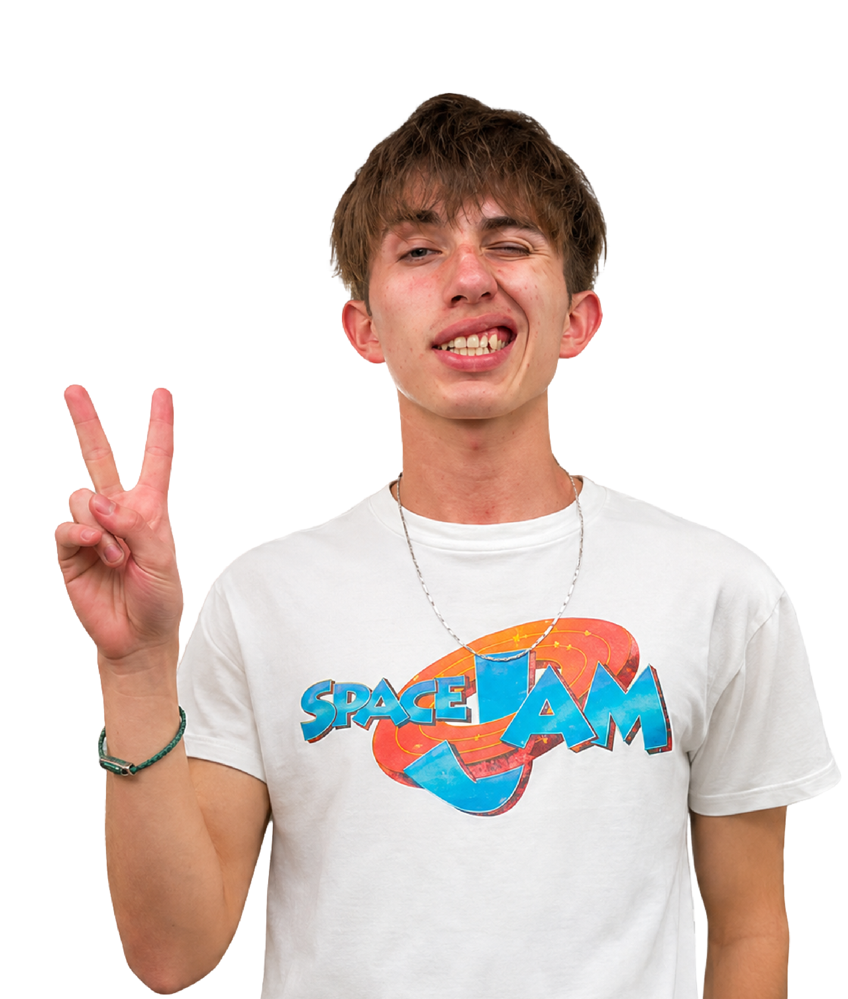

WEB PROYECTOS — DISEÑADOR MULTIDISCIPLINAR
Ideas en movimiento.
Soy Jefry Chacon, diseñador multidisciplinario enfocado en crear soluciones visuales que conectan diseño, comunicación y experiencias digitales. Me interesa explorar, aprender y transformar ideas en proyectos con intención.

FOCUS / JCH
MOVE TO EXPLORE ↘
02 / SELECTED WORK
The collection.
Una colección de experiencias, marcas y exploraciones visuales. Desliza para descubrir las portadas y selecciona un estuche para abrir cada proyecto.
01 / 13
DRAG / SCROLL TO EXPLORE — CLICK A CASE TO OPEN
03 / CONNECT
HAVE A PROJECT IN MIND?
Let's make
it happen.
¿Tienes una idea, un proyecto o una oportunidad de colaboración? Hablemos y construyamos algo juntos.